樹莓派－基本用法
Apr 12, 2017
登入
|
|
設定時區跟語系
|
|
就會看到 很多個選項 4 Localisation Options
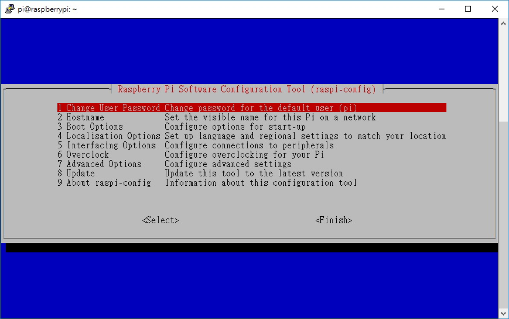
I2 Time Zone
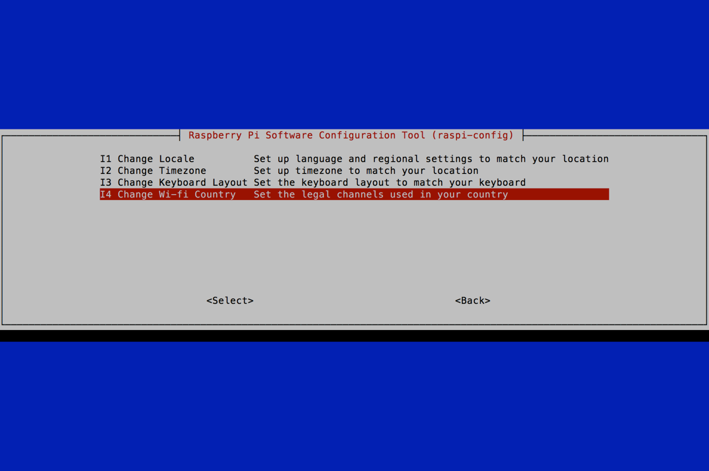
- 語系：en_TW, UTF-8
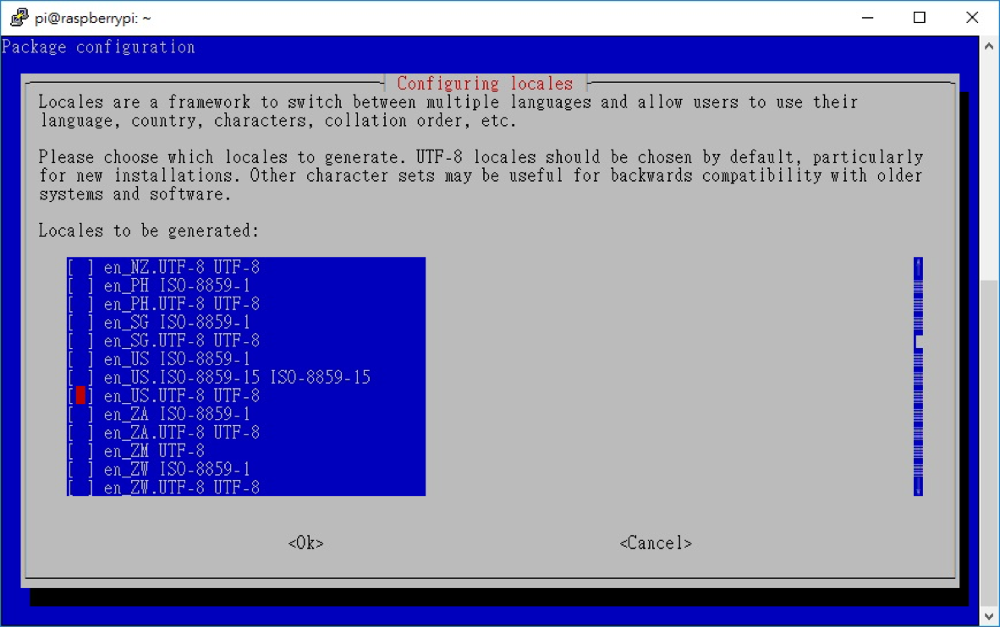 - 時區：Asia, Taipei
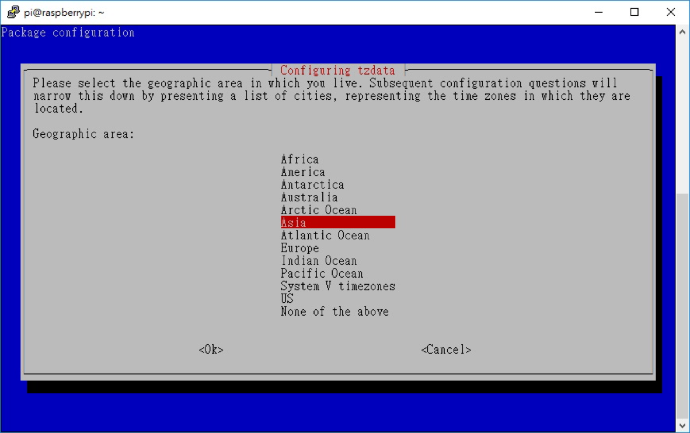
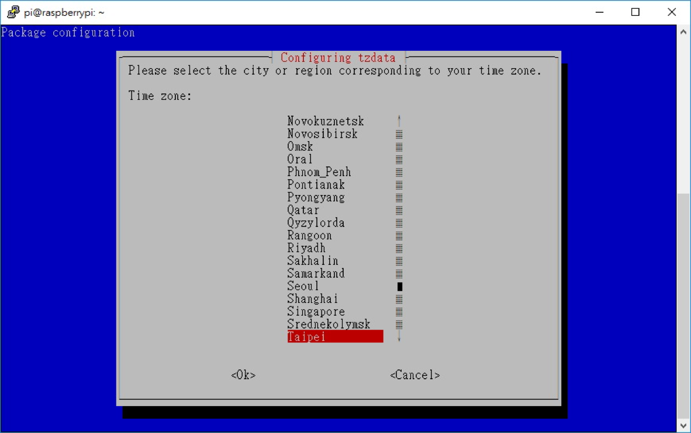
設定鍵盤
跟上面一樣1$ sudo raspi-config
I3 Keyboard
- Generic 101-key PC
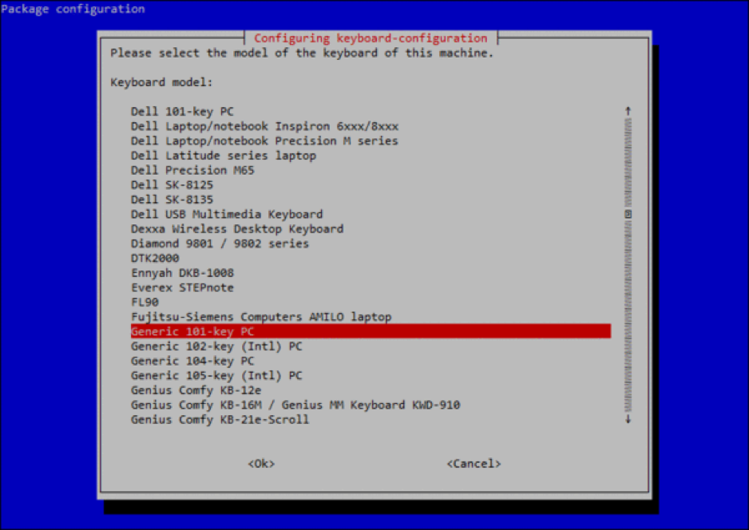
Other
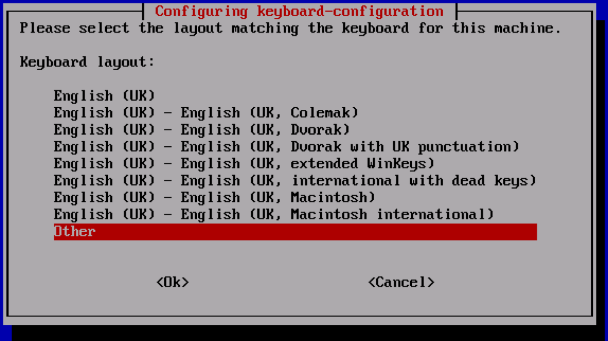English(US)
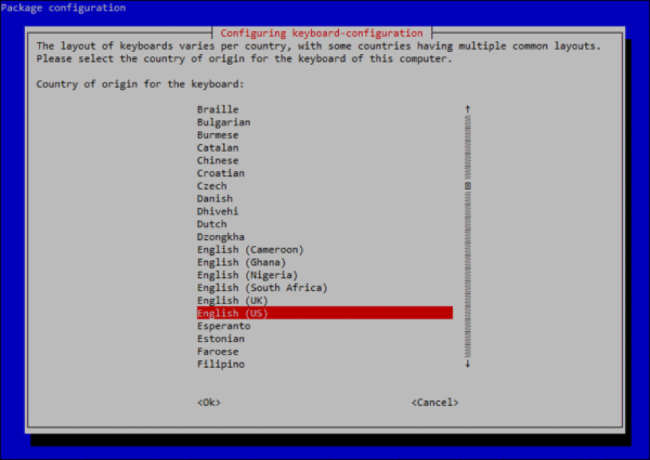English(US)
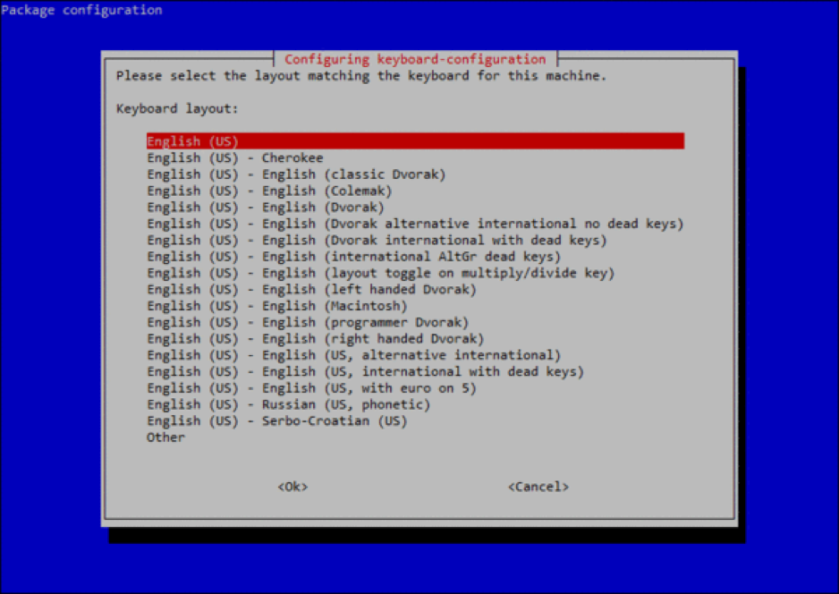The default for keyboard layout
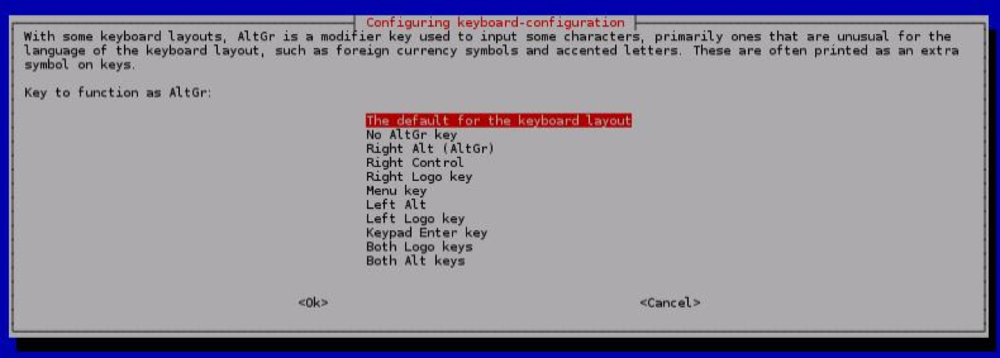No compose Key
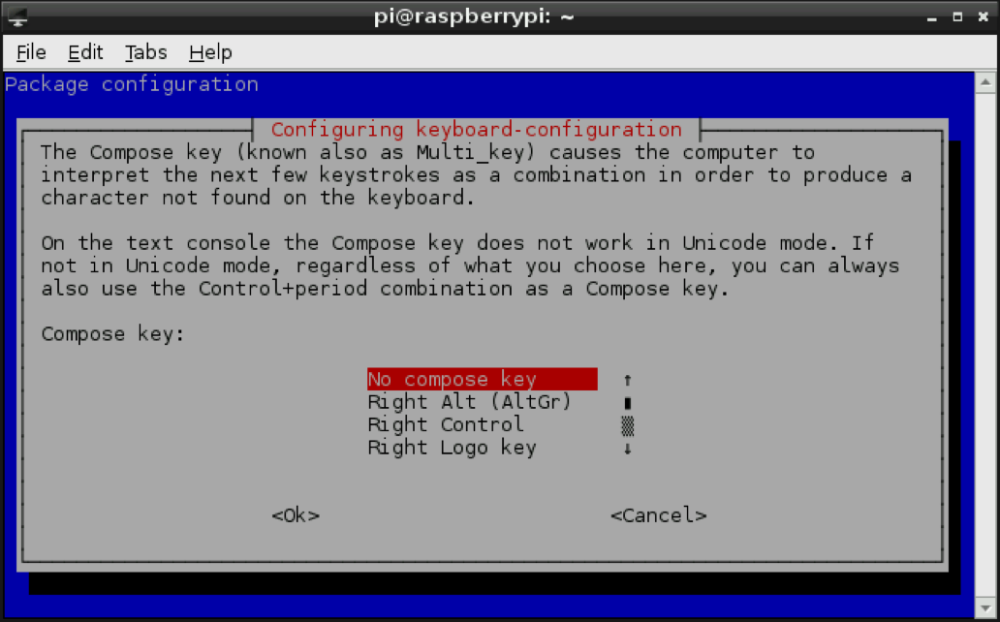
這樣就可以了～～ψ(｀∇´)ψ